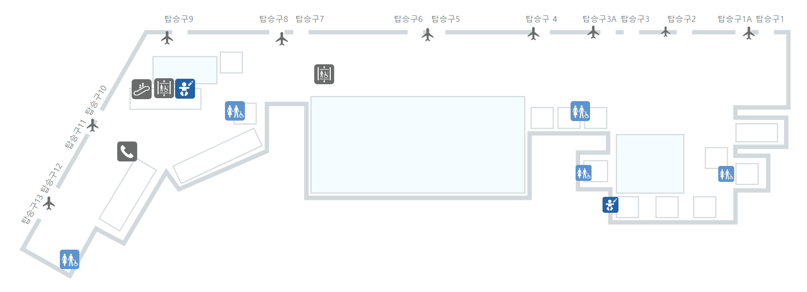

JEJU INTERNATIONAL AIRPORT
제주를 담아가는
마지막 쇼핑
당신의 쇼핑이 제주의 내일이 됩니다.
JDC 면세점의 쇼핑 가이드를 만나보세요.
브랜드 찾기
출발 시간 맞춤 쇼핑 플래너
탑승 마감 전까지 시간 안에 구역별 동선을 짜드립니다. (서편 → 중앙 → 동편 순서)
매장 지도
영업시간 · 구역을 눌러 입점 브랜드를 확인하세요.

JDC가 하는 일
면세점은 JDC의 사업이자 제주를 위한 선순환의 출발점입니다.
선순환 구조
입점·제휴 문의
제주 로컬 브랜드와 국내외 파트너의 입점 제안을 기다립니다.